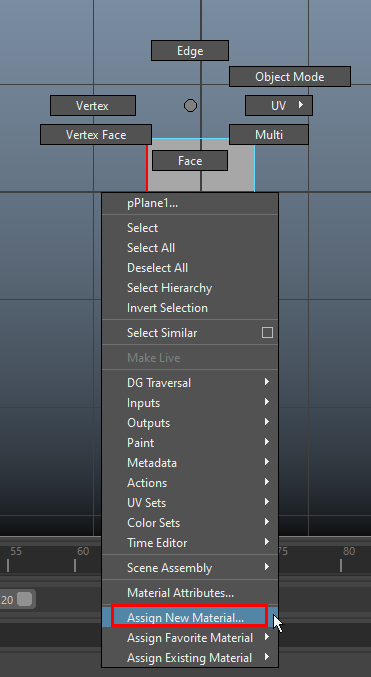

Create a plane in viewport with 1 subdivision and 90 degree rotation in X

Hit 6 to go into texture mode

Assign new shader to the plane
 
Rename the lambert
 ------------->
-------------> 
Locate the file and open it

Now give the correct dimensions
 the scale it down
the scale it down
Your image is successfully imported
Now freeze the transformations
 ------------------>
------------------> 
Duplicate the plane and rotate 90 degrees Y axis
Move to front view and center the anatomy

Move to right face and align the second plne almost to center

Select both the planes and make a group then add a layer
 ----------------->
----------------->  Makes the plane unselectable
Makes the plane unselectable